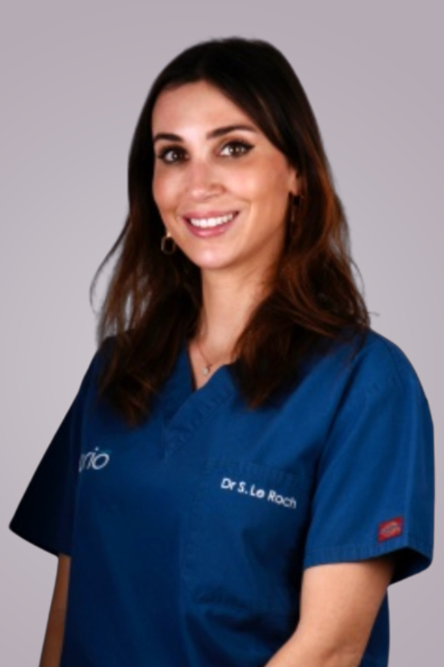

Fr / En
Entrez dans la room
L’équipe Perio est le groupe de parodontistes spécialisés dans la prise en charge des cas complexes de rhéabilitation orale (parodontologie, implantologie et chirurgie orale) à Paris 16e.
Discipline prenant en charge les tissus de soutien des dents et des implants (gencive et os), la parodontologie est au coeur des traitements dentaires.
Le cabinet Perio collabore avec les cabinets dentaires pour assurer aux patients des traitements de qualité.
Lors de la première consultation, le parodontiste sera à votre écoute pour définir vos objectifs. Il réalisera un examen clinique et radiographique, une analyse du sourire, et si nécessaire un bilan photographique.
Ces maladies inflammatoires de la gencive, de cause bactérienne, nécessitent un traitement en plusieurs étapes, personnalisé en fonction de l’étendue et de la sévérité de la maladie.
Traitement non chirurgical
Traitement initial au fauteuil sous anesthésie local
Traitement chirurgical
Complément si nécessaire du traitement initial
Analyse bactérienne
Pour mettre en place un traitement antibiotique si nécessaire
Régénération tissulaire
Reconstruction des défauts engendrés par la maladie
Maintenance parodontale
Un suivi régulier adapté aux besoins du patient est instauré en fin de traitement.
Les implants dentaires sont des racines artificielles en titane permettant de remplacer les dents absentes.
Pose d'implants
Acte réalisé sous anesthésie locale
Planification numérisée
Derniers outils numériques pour guider la pose des implants
Gestion de l'esthétique
Pose des implants pour un résultats esthétique naturel et durable
Traitement des péri-implantites
Gestion des complications pouvant survenir autour des implants
Traitement des récessions gingivales
Techniques mini-invasives de greffes de gencive
Gestion du sourire
Alignement des collets dentaires
Correction des défauts autour des implants
Apport de gencive par greffe mini-invasive en cas de déficit
Préparation parodontale avant prothèse
Création des conditions optimales pour intégration des prothèses
Régénération osseuse au cours de la pose d'implants
Augmentation osseuse et pose d’implant simultanée
Régénération osseuse avant la pose d’implant
Correction des défauts osseux importants pour un résultat esthétique et fonctionnel optimal
Greffe osseuse
Augmentation osseuse à l’aide de greffons autogènes
Greffe de sinus
Augmentation osseuse à l’aide de biomatériaux.
Les biomatériaux utilisés dans le cabinet Perio sont sélectionnés sur la base de leur recul scientifique.
Préparation parodontale avant orthodontie
Traitement des inflammations et renforcement de la gencive (greffes gingivales)
Désinclusion de dents incluses
En vue d’une remise en place orthodontique de dents sur l’arcade
Frénectomie
Suppression des brides interférant avec le traitement orthodontique
Minivis d’ancrage orthodontique
Création des conditions optimales pour intégration des prothèses
Dents de sagesse
Diagnostic personnalisé sur la nécessité d’extraction et interventions peu invasives
Dents surnuméraires
Des chirurgiens dentistes spécialistes (parodontistes), enseignants et conférenciers internationaux, diplômés de l’Université de Paris et titulaires du Post Graduate Européen de Parodontologie et d’Implantologie orale.